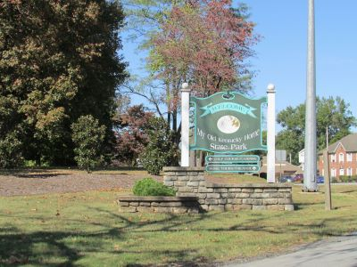
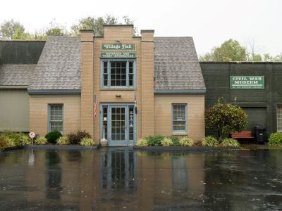
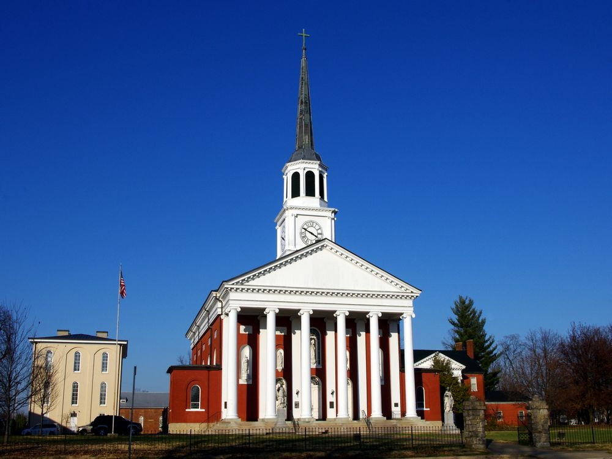
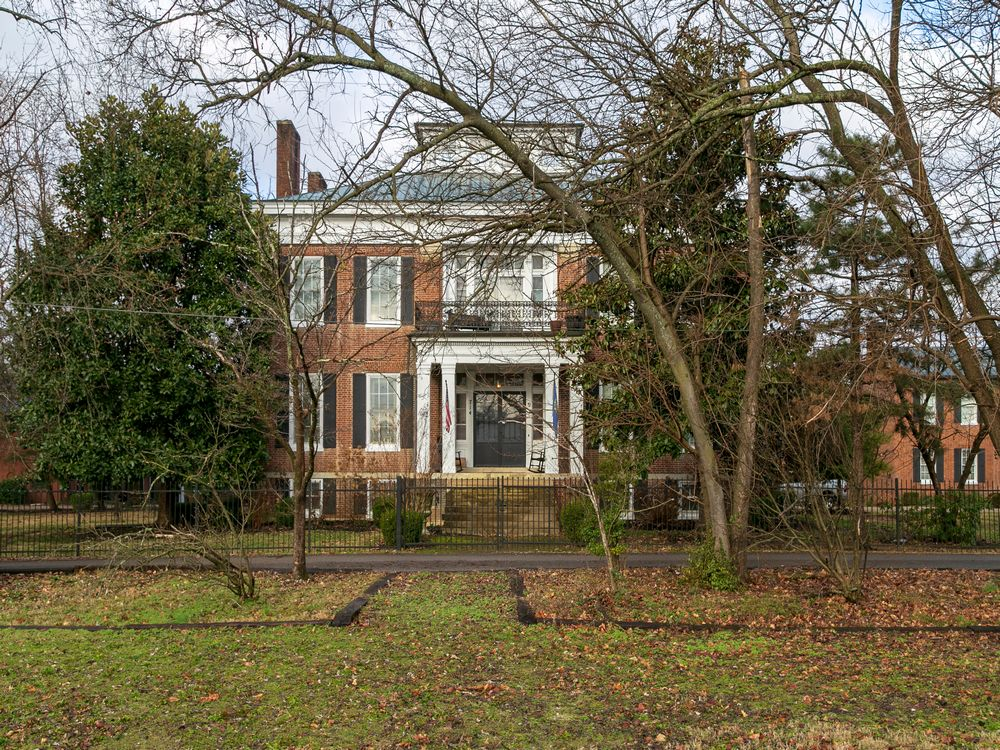
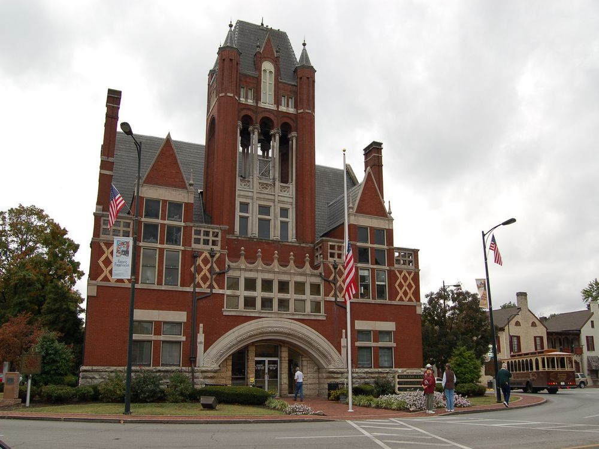
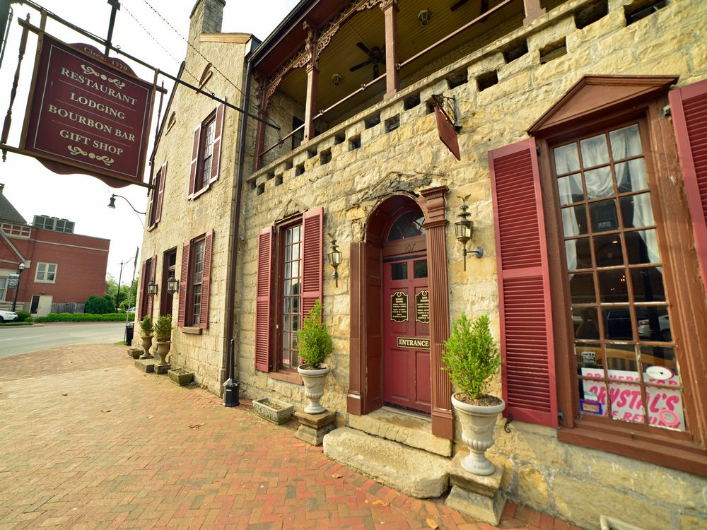
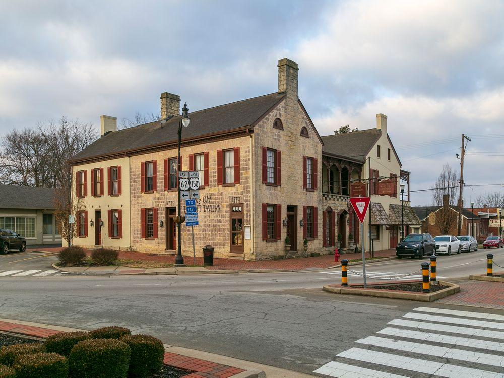
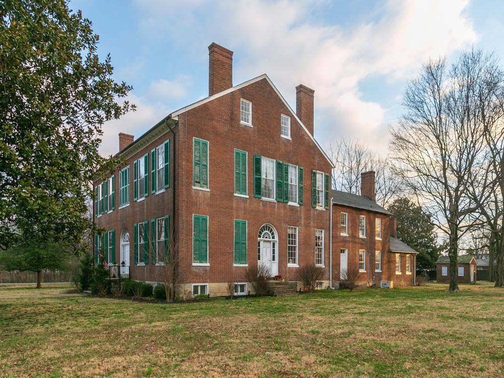

.jpg){kind=link}
Charming small town known for its bourbon heritage, historic architecture, and vibrant cultural scene, offering distillery tours, museums, and scenic parks.
General Information
How to Get There
From Nashville, TN (112 mi): Take I-65 N toward Louisville, then exit onto Bluegrass Parkway East; follow signs to Bardstown via US-31E N.
Overview
Bardstown is a small, historic city in central Kentucky and the self-proclaimed "Bourbon Capital of the World," because more than a dozen distilleries operate in and around Nelson County, and most of the world's bourbon is made in the state. It is also known for My Old Kentucky Home State Park, the Federal Hill mansion that is said to have inspired Stephen Foster's song, which became the state song. The town has a charming historic district, one of the oldest in Kentucky, with brick buildings from the late 1700s and early 1800s.
Visitors come to Bardstown for distillery tours at Heaven Hill, Barton 1792, and nearby Jim Beam and Maker's Mark, for the Oscar Getz Museum of Whiskey History, and for the outdoor drama The Stephen Foster Story. They also come for the historic downtown, with the Old Talbott Tavern, and for the Kentucky Bourbon Festival each September, and the town is a key stop on the Kentucky Bourbon Trail, about 40 miles south of Louisville.
History
Bardstown was settled in the 1770s and officially established in 1780, making it one of the oldest cities west of the Appalachians, and it was named for David Baird, an early landowner. In the late 1700s, Irish and Scots-Irish settlers brought their whiskey-making knowledge, and distilling became an important industry, with the area's limestone-filtered water. Bardstown became a major center for Catholicism in the West, and the Proto-Cathedral of St. Joseph, built in 1819, was the first Catholic cathedral west of the Appalachians. During the Civil War, the town served as a hospital and an area of conflict between armies, and in 1855 the nearby Abbey of Gethsemani was founded by Trappist monks.
Sightseeing and Popular Landmarks
My Old Kentucky Home State Park includes Federal Hill, a Georgian mansion built in the early 1800s, with tours, gardens, and a golf course. The Old Talbott Tavern, built in 1779, is one of the oldest stagecoach stops in the country and is still open as an inn and restaurant, and the Basilica of St. Joseph Proto-Cathedral has paintings given by the king of France. The Old Bardstown Village and Civil War Museum has a collection of log cabins and artifacts, and the Abbey of Gethsemani, where writer Thomas Merton lived, is a short drive away.
Culture and Museums
The Oscar Getz Museum of Whiskey History has a collection of whiskey memorabilia from the pre-Prohibition era, and the Civil War Museum of the Western Theater and the Nelson County Museum cover local history. The Stephen Foster Story, an outdoor musical performed in summer, tells the story of the composer and the song "My Old Kentucky Home," and the Kentucky Bourbon Festival in September celebrates the local spirit. The Bardstown Historic Walking Tour is a good way to see the town's early buildings.
Parks
My Old Kentucky Home State Park has gardens, a golf course, and a campground, and the Bernheim Arboretum and Research Forest, a few miles north, has 16,000 acres of forest, gardens, and trails. The Rolling Fork River provides additional recreation in the area. The countryside of rolling green hills, farms, and distilleries is also pleasant to drive.
Seasons and Weather
Bardstown has a humid subtropical climate. Summers are hot and humid, with highs in the upper 80s°F, and winters are cool, with highs in the 40s°F and about 12 inches of snow. Spring and fall are the best times to visit, and September is the busiest month because of the Bourbon Festival. Thunderstorms are common in spring and summer.
This article uses material from Wikipedia as well as information from official tourism and institutional sources. Key references include Visit Bardstown, Kentucky Bourbon Trail, My Old Kentucky Home State Park, Oscar Getz Museum of Whiskey History, Kentucky Tourism, and National Weather Service Louisville. Wikipedia material is from the article "Bardstown, Kentucky", and is available under the Creative Commons Attribution-Share-Alike License 3.0.
Featured Locations

Calstanhope, CC BY-SA 4.0, via Wikimedia Commons; Image Size Adjusted

My Old Kentucky Home State Park
Historic estate offering guided mansion tours, gardens, and cultural exhibits celebrating 19th-century Kentucky heritage.

Calstanhope, CC BY-SA 4.0, via Wikimedia Commons; Image Size Adjusted
Old Bardstown Village & Civil War Museum
Extensive museum complex featuring Civil War artifacts, pioneer-era log structures, and exhibits on 19th-century American life and military history.

Calstanhope, CC BY-SA 4.0, via Wikimedia Commons; Image Size Adjusted
Oscar Getz Museum of Bourbon History
Museum showcasing a vast collection of rare bourbon artifacts, historic bottles, and exhibits chronicling the evolution of American whiskey culture.






